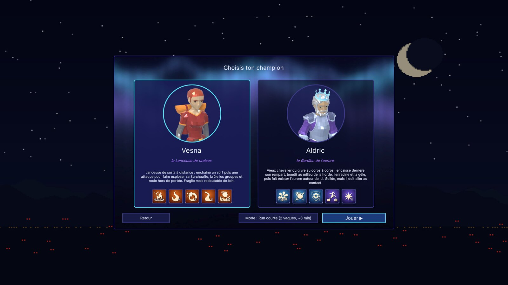
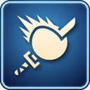
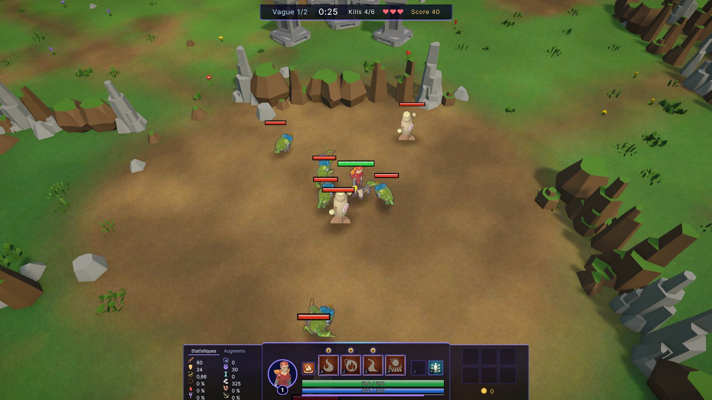
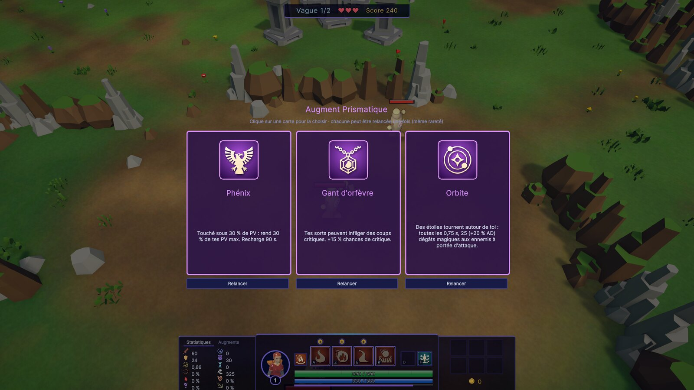
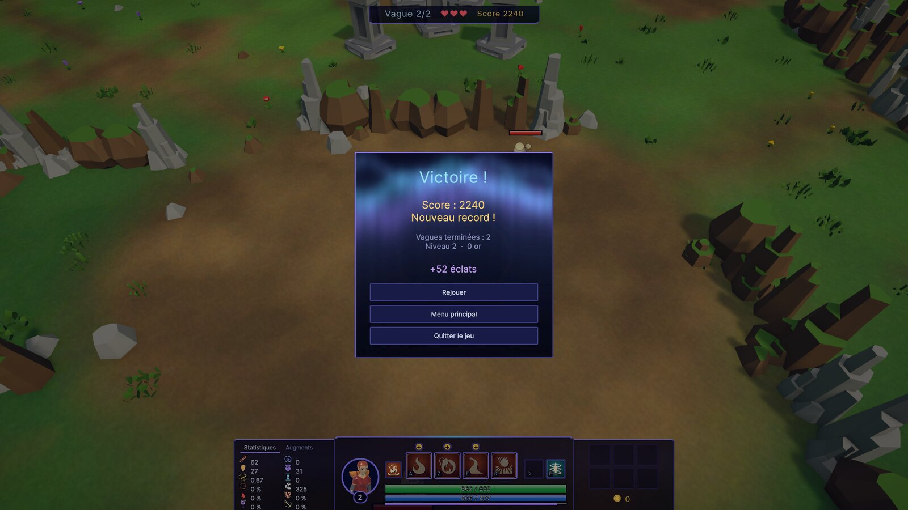

Aegis est un rogue-lite à vagues d'ennemis en 2.5D. Le joueur choisit un champion, tient une clairière assiégée, gagne de l'expérience, construit son personnage avec des objets et des augments, puis accumule des éclats qui débloquent des talents entre les runs. Le contenu sert de prétexte : ce document porte sur l'architecture qui le fait tourner.
Le mode par défaut est la Run courte : deux vagues, en 2 à 3 minutes, qui traversent tous les systèmes demandés. Le bouton Mode de l'écran de sélection du champion lance la partie complète (5 vagues, un boss, 2 vagues bonus).

StageCatalog).
WaveRewardSchedule.
meta.json.Commandes : clic droit pour se déplacer et attaquer, A Z E R (AZERTY) pour les sorts, Échap pour la pause. Lancement : extraire Aegis-0.4.0-Windows.zip puis ouvrir Aegis/Aegis.exe.
Unity est le moteur où les quatre exigences du sujet trouvent l'outillage le plus direct : les données externes, l'injection de dépendances, les tests automatisés et un build Windows produit depuis Linux.
| Critère | Unity | Unreal Engine | Godot |
|---|---|---|---|
| Données externes | ScriptableObjects : assets typés, référençables entre eux, édités dans l'Inspector | DataAsset, DataTable | Resource |
| Injection de dépendances | VContainer : mûr, rapide, scopes par scène | Pas de standard (subsystems) | Pas de standard (autoloads = singletons) |
| Tests automatisés | Unity Test Framework, EditMode et PlayMode, en ligne de commande | Automation, plus lourd | GUT (communauté) |
| Jeu 2.5D à sprites | Adapté (URP, sprites face caméra) | Surdimensionné | Adapté |
| Itération | C#, compilé en quelques secondes | C++ long à compiler, ou Blueprints difficiles à relire et à versionner | Rapide |
| Build Windows depuis Linux | Oui (module Windows Mono) | Difficile | Oui |
C# est aussi le langage que nous maîtrisons le mieux. Godot était le concurrent sérieux. Il lui manque un conteneur d'injection reconnu et un outil de tests aussi intégré : ce sont deux points centraux pour un sujet noté à 50 % sur l'architecture.
Le code est découpé en quatre assembly definitions. Chaque couche ne dépend que de celles du dessous : le compilateur refuse toute dépendance à rebours, et un test le vérifie sur le code compilé.
Game.ContainersGame.PresentationGame.FeaturesGame.SystemsAssets/DataLe gameplay a parfois besoin de l'UI : savoir si un clic tombe sur le HUD (pour ne pas déplacer le personnage) ou mettre à jour la barre de vie d'un personnage. Il passe alors par une interface déclarée dans sa couche ou en dessous, et implémentée plus haut :
| Interface | Déclarée dans | Implémentée par | Obtenue par |
|---|---|---|---|
IPointerOverUi | Systems | UiPicking (Presentation) | injection (scope racine) |
ICharacterOverlay | Features | HealthBarView (Presentation) | composant enfant du prefab |
Hors de ces couches : Assets/Editor (génération des données, builds) et Assets/Tests (212 tests EditMode et PlayMode).
Détruire le scope de jeu (fin de run, « Rejouer ») remet à zéro tout l'état de la run. La méta-progression vit dans le scope racine et ne connaît aucun système de gameplay.
sequenceDiagram
participant E as Ennemi
participant B as IEventBus
participant R as RunDirector
participant P as Joueur
participant W as Wallet
participant S as ScoreService
participant H as HUD
E->>B: EnemyKilledEvent(xp, or)
E->>B: WaveEnemyKilledEvent
B->>R: quota +1
R->>B: XpGrantedEvent
B->>P: + XP, niveau
B->>W: + or
B->>S: + 10 points
B->>H: XP, or, quota et score affichés
ScoreService ne change rien pour eux.
stateDiagram-v2
direction TB
[*] --> Menu
Menu --> Loading: Jouer
Loading --> Game
Game --> Pause: Échap
Pause --> Game
Game --> Win
Game --> GameOver
Win --> Loading: Rejouer
GameOver --> Loading: Rejouer
Pause --> Menu
Win --> Menu
GameOver --> Menu
GameState, états globaux du jeu.GameStateMachine<TId> (couche Systems) sert pour deux enums : GameState et RunState (PreWave → Combat → Overtime → Reward). Les règles de transition sont des données sérialisées, et une transition interdite est refusée et journalisée.
Pas de code dupliqué entre états. Les réactions sont abonnées au changement d'état au lieu d'être écrites dans chaque état :
TimeScaleService met le temps à 0 en Pause, Win, GameOver et Reward ;InputMapSwitcher bascule les commandes entre jeu et interface ;Chaque scène déclare son état d'entrée (SceneEntryPoint) : n'importe quelle scène se lance directement dans l'éditeur.
IEventBus (Publish<T> / Subscribe<T>) est injecté, jamais statique. Les 88 types d'événements sont des readonly struct : publier n'alloue rien. Subscribe renvoie un IDisposable, et chaque composant libère ses abonnements dans OnDestroy ou Dispose. Les événements propres à un personnage (coup porté, dégâts subis) passent par des événements C# locaux : des centaines d'ennemis satureraient le bus global.
Les services sont enregistrés dans trois scopes. Les classes C# reçoivent leurs dépendances par constructeur, les MonoBehaviour par une méthode [Inject] Construct(...). Le code de jeu ne contient aucun singleton, aucun champ statique modifiable, aucun FindObjectOfType ni Camera.main.
GameLifetimeScope enregistre une trentaine de services.Vagues (quota, durée, table d'apparition pondérée, multiplicateurs), stages, ennemis, boss, objets, augments, talents et réglages sont des ScriptableObjects. Le code ne contient aucune valeur d'équilibrage. Les assets sont en lecture seule à l'exécution, l'état vit dans des instances runtime, et ils sont injectés, jamais cherchés par leur nom. Des scripts d'éditeur idempotents (Tools > Project Setup) génèrent et réparent les données sans écraser les réglages faits à la main.
Stage_Demo reprend les deux premières vagues du stage complet avec des durées plus courtes, et StageCatalog la propose en premier. Le barème du score est lui aussi un asset (ScoreRules) :
Limites : pas d'édition hors de Unity ; un asset supprimé laisse une référence vide, détectée seulement par les tests ou à l'exécution ; un comportement vraiment nouveau (un nouveau type d'effet) demande toujours du code, seules les combinaisons sont des données.
MetaProgress (scope racine) écoute RunEndedEvent pour créditer des éclats et RunScoredEvent pour garder le meilleur score. Il sauvegarde en JSON (sous Windows : AppData\LocalLow\DefaultCompany\Aegis\meta.json). Les éclats achètent des talents par champion, appliqués au début de la run suivante (PV, or de départ, vies, relances d'augment). La run ne connaît pas la sauvegarde, et la sauvegarde ne connaît pas la run : seuls des événements les relient. En éditeur et en test, un fichier séparé protège la sauvegarde du joueur.
Limites : ni versionnage du format, ni écriture atomique. Une coupure pendant l'écriture peut corrompre le fichier : il est alors ignoré avec un avertissement et la progression repart de zéro.
Le découplage n'est pas seulement affirmé : il est vérifié automatiquement à chaque exécution des tests.
| Test | Ce qu'il garantit |
|---|---|
NoStaticMutableField_NoSingleton | Par réflexion sur les assemblies compilées : aucun champ statique modifiable et aucune propriété Instance dans le jeu ni dans l'infrastructure. |
Layers_Systems_Gameplay_Presentation_Containers | Systems ne référence pas le jeu ; le jeu ne référence ni l'UI ni le câblage ; l'UI est bien une couche à part. |
NoSystem_DependsOnTheScore | Aucune classe n'a de champ ni de paramètre de type ScoreService : on peut le retirer sans rien casser. |
TheShortRun_GoesThroughEverySystem | Dans la vraie scène : stage choisi, deux vagues, choix d'augment, XP, score, victoire, éclats et record écrits sur disque. |
Sans l'asset ScoreRules dans la scène, ScoreService n'est pas enregistré : la run se joue à l'identique, le HUD masque le score et l'écran de fin n'affiche pas la ligne de score.
Les tests EditMode couvrent les stats, les dégâts, les machines à états, le bus, la boutique, les augments, la méta-progression, le score et l'architecture. Les tests PlayMode tournent dans la vraie scène : vagues, victoire, défaite, boss, objets, run courte complète. Le bot d'équilibrage joue la partie entière avec les mêmes commandes qu'un joueur.
| Limite | Avec plus de temps |
|---|---|
Certains panneaux lisent directement des services concrets du jeu (ShopPanel → ShopService). C'est autorisé, la présentation étant au-dessus, mais remplacer un service oblige à toucher son panneau. | Des interfaces en lecture seule (IShopQuery, IMetaQuery) entre les deux couches. |
Quelques classes trop grosses : ShopPanel (700 lignes), PlayerHud (440 lignes). | Les découper en vues (onglets, info-bulles, grille). |
| Le jeu tient dans une seule assembly. | Une assembly par domaine, pour que le compilateur force aussi le découplage entre domaines. |
| Sauvegarde JSON simple. | Format versionné, écriture atomique (fichier temporaire puis renommage). |
| Bus synchrone sans outil de diagnostic. | Une fenêtre de debug listant les abonnés et les derniers événements. |
| Pas d'audio, effets visuels minimaux. | Un AudioService abonné au bus, sans toucher au gameplay. |
| Le contenu vient d'une spécification MOBA plus riche que le sujet. | Un choix de motivation : l'architecture n'en dépend pas, comme le montre la run courte. |
Les quatre règles (machine à états, données, injection, bus) ont été posées dès le début et appliquées à tout le code, y compris quand un raccourci aurait été plus rapide. Le coût est réel : davantage de fichiers, plus de câblage, et des bugs d'ordre d'événements qu'un appel direct n'aurait pas eus. En échange, on ajoute du contenu sans toucher au code : le deuxième champion, les élites et la run courte sont arrivés presque entièrement par des données. La séparation de l'UI en couche distincte, faite tard, a révélé deux dépendances cachées ; posée dès le départ, elle aurait évité de les corriger après coup.
| Exigence | Réalisation | |
|---|---|---|
| Machine à états (Menu, En jeu, Pause, Game Over) | GameStateMachine<TId> : GameState (+ Loading, Win) et RunState ; réactions abonnées, sans duplication | ✔ |
| Event bus découplé | IEventBus injecté, 88 événements ; ennemi tué → run, XP, or, score, HUD | ✔ |
| Managers et services, choix justifié | VContainer, 3 scopes ; justification et limites §5.2 | ✔ |
| Vagues, ennemis, améliorations en données | 368 ScriptableObjects : WaveDefinition, StageDefinition, EnemyDefinition, objets, augments | ✔ |
| Méta-progression persistante et découplée | MetaProgress (JSON) : éclats, talents par champion, meilleur score | ✔ |
| Run minimale de 2-3 min | Run courte : 2 vagues, XP, augment, score final, sauvegarde | ✔ |
| Couches séparées (logique, présentation, données) | 4 assemblies (Systems, Features, Presentation, Containers) et Assets/Data | ✔ |
| Couplage minimal | Score retirable, testé par ArchitectureTests | ✔ |
| Pas de singleton statique | Vérifié par réflexion sur le code compilé | ✔ |
| Git exploitable | Branches de fonctionnalité, PR, Conventional Commits, tags de jalons | ✔ |
| Build Windows | Release v0.4 : Aegis-0.4.0-Windows.zip | ✔ |
feature/<module>-<sujet> → pull request vers dev → main aux jalons, taggés v0.1 à v0.4.feat(score): …, refactor(ui): …, test: …).Library/, Builds/ et les fichiers d'IDE sont ignorés.La spécification complète (environ 1 300 lignes, tenue à jour au fil du projet) est dans Docs/CharacterSystem_Design.md. La version Markdown de ce document est Docs/Rendu.md.